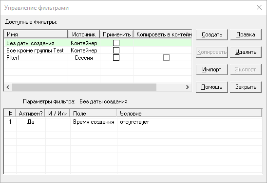

Фильтр — это условие или набор условий, которым удовлетворяет или не удовлетворяет элемент. Password Safe позволяет определить фильтры и отобразить лишь те элементы, которые удовлетворяют заданным в них условиям. Вы можете сформировать фильтр для разового использования, или же создать один или несколько именованных фильтров и сохранить их для повторного использования. Фильтры могут быть сохранены внутри контейнера или во внешнем файле (для использования с разными контейнерами).
Каждый фильтр состоит из одной или нескольких строк, каждая из которых описывает условие для указанного поля. Записанное в строке условие, может быть связано с предыдущими логическим «И» или «ИЛИ». С помощью этого можно создать следующие виды фильтров:
Все элементы, с именем пользователя «вася», «Вася» или «ВАСЯ»
Все элементы, с именем пользователя «Вася» (точное совпадение), созданные после 1 мая 2008 года
Все элементы, с именем пользователя, содержащим «Вася» или «Маша»
Как видно из примеров, фильтры могут быть различной сложности.
Описание столбцов фильтра:
«#» — номер условия. Отображается для удобства, и не может быть изменён.
«?» — флажок в данном столбце определяет, используется данное условие или нет. При отборе записей по фильтру учитываются только те условия, у которых стоят флажки в данном поле. Щелчок в поле устанавливает/снимает флажок.
«+» — щелчок по данному полю добавляет новую строку после текущей.
«-» — щелчок по этому полю приводит к удалению текущей строки. Примечание. Так условие удаляется навсегда, в некоторых случаях удобнее отключить его, а не удалить.
«И / Или» — позволяет определить связь с предыдущим условием.
«Поле» — содержит имя поля на которое накладывается условие («Имя пользователя», «Пароль», «Заголовок», «Группа», и пр.).
«Условие» — описывает условие, накладываемое на выбранное поле. После выбора поля щелчок в данной ячейке приводит к отображению списка с доступными условиями.
Применение фильтра
После нажатия на кнопку «Применить» производится фильтрация записей, но окно со списком условий остаётся открытым. Это удобно при исправлении и подстройке фильтров. Нажатие на «OK» также применяет фильтр, но закрывает окно с условиями.
Когда фильтр активен, в строке состояния отображается количество показанных элементов и, в скобках, общее количество элементов контейнера. Кроме того, в правом углу появляется значок (). При этом, элементы, попавшие под условия фильтра, выделяются красным цветом.
Управление фильтрами
Пункт меню «Создать/Редактировать фильтр» удобен для «одноразовых» фильтров. Если же у вас есть фильтры, которые хотелось бы использовать повторно, их можно сохранить воспользовавшись пунктом меню Вид→Фильтры пользователя→Управление.

Диалоговое окно управления фильтрами содержит две таблицы. В верхней перечислены фильтры, а в нижней — условия, определённые в выбранном фильтре.
Для редактирования существующего фильтра следует выбрать его в верхней таблице и нажать кнопку «Правка».
Для применения существующего фильтра нужно установить для него флажок в столбце «Применить». Обратите внимание, что нельзя применить сразу несколько фильтров.
Сохранение фильтров
Фильтры могут быть сохранены в текущем контейнере или во внешнем XML-файле. Внешние фильтры удобны тем, что их можно использовать в нескольких контейнерах, а фильтры сохранённые внутри контейнера не разглашают потенциально важную информацию, заданную в условиях (части имён, паролей и пр.).
Для сохранения фильтра во внешнем файле установите флажок в столбце «Экспорт» и нажмите кнопку «Экспорт».
Для сохранения фильтра в текущем контейнере установите флажок в столбце «Копировать в контейнер» и нажмите кнопку «Копировать».
Для загрузки фильтра из внешнего файла нажмите кнопку «Импорт».
Примечание. При старте Password Safe проверяет наличие файла autoload_filters.xml в каталоге с файлом настроек pwsafe.cfg (по умолчанию это каталог, в который был установлен Password Safe). Если такой файл существует, из него автоматически загружаются фильтры. Это удобно, если нужно использовать некоторый набор фильтров во всех контейнерах, и нет желания загружать их вручную каждый раз.


 ). При этом, элементы, попавшие под условия фильтра, выделяются красным цветом.
). При этом, элементы, попавшие под условия фильтра, выделяются красным цветом.